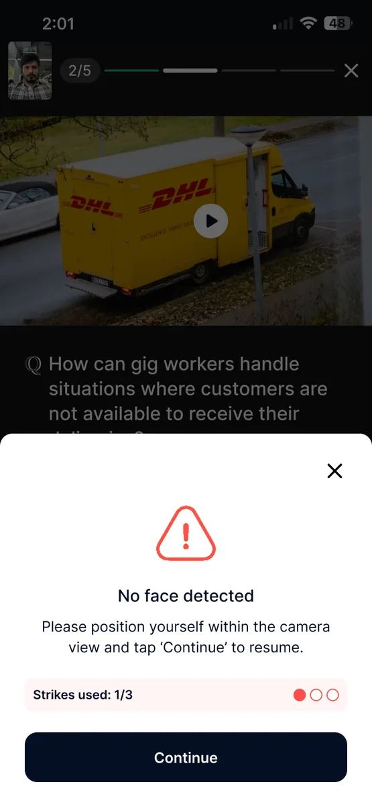

Every month, young Assamese leave home to build the rest of India — often in unsafe, low-paid, invisible work. This is how Assam finds them, protects them, and lifts them up — and builds the pathway home.
Assam's people want to work — its labour-force participation is among India's highest. But the jobs aren't at home. So hundreds of thousands migrate for construction, plywood, hotels, security and factory floors across the country.
Assamese workers are the backbone of construction, plywood, seafood and hospitality across India — usually as the lowest-paid, least-protected hands on site.
~8 lakh Assamese (est.). Perumbavoor's plywood hub — 1.5 lakh+ migrants — runs on Assamese labour.
Seafood & fish processing, SEZ and power-plant construction around Chennai & Ennore.
Construction and hospitality. Assam is among Karnataka's top migrant-source states.
There is no database of Assam's outbound workers. They leave without informing anyone. The state learns of them only after abuse, accidents — or death.
Most Assamese migrants enter as helpers and stay there — at the bottom of the wage ladder, with no papers and no safety net.
Advantage Assam 2.0 loaded the largest investment pipeline in the state's history — and its jobs are overwhelmingly frontline: semiconductor assembly, plant construction, energy, logistics, hospitality.
For the first time, a young Assamese can build a career without boarding a train to Kochi. The state that skills its youth before the plants open keeps those jobs — and can call its people home.
Atmanirbhar Asom is the right long game. But hundreds of thousands are already outside today — and every month, families lose a son. We don't wait for that day. We reach Assam's workers wherever they are.
Verify every worker, carry welfare & insurance across state lines, and give them an SOS line that works anywhere in India.
Upskill helpers into certified, better-paid, insurable jobs — in their own language, on their own phone.
Feed skilled, experienced Assamese back into Jagiroad, the refineries and the logistics parks the ₹4.91L Cr pipeline is building.
An Assam Worker Stack — a verified, portable, lifelong profile that follows every Assamese worker across India, carrying their identity, welfare and skills. The state's living record of its people, wherever they work.
We don't hand the state a portal. We run the full loop — and hand back workers who are seen, protected and moving up.
Assamese-first outreach in the tea belt, char areas & at source. Register before they leave.
A verified identity + skills profile — insurable, and resistant to trafficking & fake jobs.
Portable welfare, insurance & an SOS line that works across every state line.
Mobile-first Assamese training turns a helper into a certified, higher-paid worker.
Placed into safer, formal jobs — with a pathway home as Assam's own jobs grow.
Turn the state's care from a repatriation scheme into a shield that follows every Assamese worker, alive and well, wherever they go.
Social security that crosses state borders — accident & life cover from day one, benefits that don't reset when a worker moves.
Bank-linked wages, savings, easy remittance home and early-wage access — so families are protected, not indebted (betterMoney).
Verified employers, a registered trail and an SOS grievance line — so a missing worker can be found, and a fake job flagged.
The state already brings the fallen home. We help keep them safe while they live — the same intent, made proactive.
Mobile-first, Assamese-first training that turns an unskilled helper into a certified, higher-paid, insurable worker — and opens the door to formal jobs.

India's experience is consistent — state skilling built without live employer demand produces certificates, not jobs. Karnataka's own audit found just 18% of trainees placed against a 70% target, courses chosen without vacancy evidence.
Assam can leapfrog that mistake: wire skilling to the named, dated demand of Jagiroad, the refineries and the logistics parks — before they switch on.
Cleanroom & assembly operators, industrial electricians, welders, warehouse associates, hospitality staff — the exact roles the pipeline hires, mapped district by district.
Electronics assembly is a proven women's-employment engine across Asia. Assam can design women-first tracks into Jagiroad from day one.
Skilling has a lead time. Plants hiring in 12–24 months need sourcing & training started now.
Kochi, Chennai, Bengaluru, Delhi — the exact cities Assamese migrate to. We don't have to find them from Guwahati. We're already there.
An on-ground network in the very cities Assamese work — so a worker in Perumbavoor or Ennore is one we can already reach, verify and protect.
The largest verified frontline workforce dataset in Asia — matching skilled Assamese to safer, better-paid, formal employers.
You have set the direction. What's missing is the engine that reaches, protects and upgrades workers where they actually are.
The ₹4.91L Cr pipeline needs a ready Assamese workforce — we skill and place them into it, and feed experienced migrants home.
You bring the fallen home. We help protect them before harm — verified, insured, reachable.
Verified, certified, language-ready Assamese candidates for international placement, including Japan.
The department admits it has no scheme to place Assam's 15.4 lakh registered unemployed. This is that scheme — built on ASDM & the Skill University.
A migration-corridor pilot that proves protection, upskilling and the live dashboard before any statewide rollout.
One corridor + one source district — the Assam→Kerala construction & plywood belt (Perumbavoor), plus a tea-belt district at home.
Register, verify, welfare-enroll & upskill a first cohort — with insurance and an SOS line live from day one.
First cut of the CM dashboard — a live map of who is where, and who is protected.
Endorsement under ASDM & the Labour & Welfare department.
Linkage to e-Shram, welfare boards & the Shraddhanjali registry.
With Labour, Skill Development & Special Branch, convened within 30 days.
One corridor + one district live · dashboard stood up.
Kerala, Tamil Nadu, Karnataka corridors · Assam Worker ID statewide.
Full stack · real-time CM dashboard · pathway-home placements.
Targets, not promises — scaled from the corridor pilot. Every worker verified and counted on the CM's dashboard.
We're asking for your endorsement, and for BetterPlace as Assam's delivery partner — starting with a 90-day corridor pilot, so no Assamese worker is invisible, unskilled or unprotected.
Migration "scale" figures are estimates or administrative floors — Assam keeps no census of its outbound workers. Incident tolls are from single-outlet reports; verify each before publication. Company figures are company-reported. Year-3 outcomes are targets.